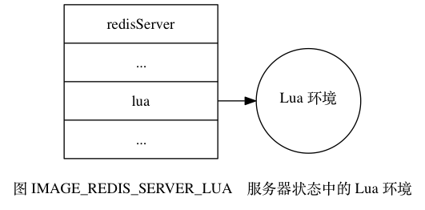

为了在 Redis 服务器中执行 Lua 脚本， Redis 在服务器内嵌了一个 Lua 环境（environment）， 并对这个 Lua 环境进行了一系列修改， 从而确保这个 Lua 环境可以满足 Redis 服务器的需要。
Redis 服务器创建并修改 Lua 环境的整个过程由以下步骤组成：
redis ，
这个表格包含了对 Redis 进行操作的函数，
比如用于在 Lua 脚本中执行 Redis 命令的 redis.call 函数。redis.pcall 函数的错误报告辅助函数，
这个函数可以提供更详细的出错信息。lua 属性里面，
等待执行服务器传来的 Lua 脚本。接下来的各个小节将分别介绍这些步骤。
在最开始的这一步，
服务器首先调用 Lua 的 C API 函数 lua_open ，
创建一个新的 Lua 环境。
因为 lua_open 函数创建的只是一个基本的 Lua 环境， 为了让这个 Lua 环境可以满足 Redis 的操作要求， 接下来服务器将对这个 Lua 环境进行一系列修改。
Redis 修改 Lua 环境的第一步， 就是将以下函数库载入到 Lua 环境里面：
assert 、 error 、 pairs 、 tostring 、 pcall ，
等等。
另外，
为了防止用户从外部文件中引入不安全的代码，
库中的 loadfile 函数会被删除。table.concat 、 table.insert 、 table.remove 、 table.sort ，
等等。string.find 函数，
对字符串进行格式化的 string.format 函数，
查看字符串长度的 string.len 函数，
对字符串进行翻转的 string.reverse 函数，
等等。math.abs 函数，
返回多个数中的最大值和最小值的 math.max 函数和 math.min 函数，
计算二次方根的 math.sqrt 函数，
计算对数的 math.log 函数，
等等。debug.sethook 函数和 debug.gethook 函数，
返回给定函数相关信息的 debug.getinfo 函数，
为对象设置元数据的 debug.setmetatable 函数，
获取对象元数据的 debug.getmetatable 函数，
等等。cjson.decode 函数将一个 JSON 格式的字符串转换为一个 Lua 值，
而 cjson.encode 函数将一个 Lua 值序列化为 JSON 格式的字符串。struct.pack 将多个 Lua 值打包成一个类结构（struct-like）字符串，
而函数 struct.unpack 则从一个类结构字符串中解包出多个 Lua 值。cmsgpack.pack 函数将 Lua 值转换为 MessagePack 数据，
而 cmsgpack.unpack 函数则将 MessagePack 数据转换为 Lua 值。通过使用这些功能强大的函数库， Lua 脚本可以直接对执行 Redis 命令获得的数据进行复杂的操作。
redis 全局表格¶在这一步，
服务器将在 Lua 环境中创建一个 redis 表格（table），
并将它设为全局变量。
这个 redis 表格包含以下函数：
redis.call 和 redis.pcall 函数。redis.log 函数，
以及相应的日志级别（level）常量：
redis.LOG_DEBUG ，
redis.LOG_VERBOSE ，
redis.LOG_NOTICE ，
以及 redis.LOG_WARNING 。redis.sha1hex 函数。redis.error_reply 函数和 redis.status_reply 函数。在这些函数里面，
最常用也最重要的要数 redis.call 函数和 redis.pcall 函数 ——
通过这两个函数，
用户可以直接在 Lua 脚本中执行 Redis 命令：
redis> EVAL "return redis.call('PING')" 0
PONG
为了保证相同的脚本可以在不同的机器上产生相同的结果， Redis 要求所有传入服务器的 Lua 脚本， 以及 Lua 环境中的所有函数， 都必须是无副作用（side effect）的纯函数（pure function）。
但是，
在之前载入到 Lua 环境的 math 函数库中，
用于生成随机数的 math.random 函数和 math.randomseed 函数都是带有副作用的，
它们不符合 Redis 对 Lua 环境的无副作用要求。
因为这个原因，
Redis 使用自制的函数替换了 math 库中原有的 math.random 函数和 math.randomseed 函数，
替换之后的两个函数有以下特征：
math.random 总产生相同的随机数序列，
这个函数是一个纯函数。math.randomseed 显式地修改 seed ，
否则每次运行脚本时，
Lua 环境都使用固定的 math.randomseed(0) 语句来初始化 seed 。比如说，
使用以下脚本，
我们可以打印 seed 值为 0 时，
math.random 对于输入 10 至 1 所产生的随机序列：
无论执行这个脚本多少次， 产生的值都是相同的：
$ redis-cli --eval random-with-default-seed.lua
1) (integer) 1
2) (integer) 2
3) (integer) 2
4) (integer) 3
5) (integer) 4
6) (integer) 4
7) (integer) 7
8) (integer) 1
9) (integer) 7
10) (integer) 2
但是，
如果我们在另一个脚本里面，
调用 math.randomseed 将 seed 修改为 10086 ：
那么这个脚本生成的随机数序列将和使用默认 seed 值 0 时生成的随机序列不同：
$ redis-cli --eval random-with-new-seed.lua
1) (integer) 1
2) (integer) 1
3) (integer) 2
4) (integer) 1
5) (integer) 1
6) (integer) 3
7) (integer) 1
8) (integer) 1
9) (integer) 3
10) (integer) 1
上一个小节说到，
为了防止带有副作用的函数令脚本产生不一致的数据，
Redis 对 math 库的 math.random 函数和 math.randomseed 函数进行了替换。
对于 Lua 脚本来说， 另一个可能产生不一致数据的地方是那些带有不确定性质的命令。
比如对于一个集合键来说， 因为集合元素的排列是无序的， 所以即使两个集合的元素完全相同， 它们的输出结果也可能并不相同。
考虑下面这个集合例子：
redis> SADD fruit apple banana cherry
(integer) 3
redis> SMEMBERS fruit
1) "cherry"
2) "banana"
3) "apple"
redis> SADD another-fruit cherry banana apple
(integer) 3
redis> SMEMBERS another-fruit
1) "apple"
2) "banana"
3) "cherry"
这个例子中的 fruit 集合和 another-fruit 集合包含的元素是完全相同的，
只是因为集合添加元素的顺序不同，
SMEMBERS 命令的输出就产生了不同的结果。
Redis 将 SMEMBERS 这种在相同数据集上可能会产生不同输出的命令称为“带有不确定性的命令”， 这些命令包括：
为了消除这些命令带来的不确定性，
服务器会为 Lua 环境创建一个排序辅助函数 __redis__compare_helper ，
当 Lua 脚本执行完一个带有不确定性的命令之后，
程序会使用 __redis__compare_helper 作为对比函数，
自动调用 table.sort 函数对命令的返回值做一次排序，
以此来保证相同的数据集总是产生相同的输出。
举个例子，
如果我们在 Lua 脚本中对 fruit 集合和 another-fruit 集合执行 SMEMBERS 命令，
那么两个脚本将得出相同的结果 ——
因为脚本已经对 SMEMBERS 命令的输出进行过排序了：
redis> EVAL "return redis.call('SMEMBERS', KEYS[1])" 1 fruit
1) "apple"
2) "banana"
3) "cherry"
redis> EVAL "return redis.call('SMEMBERS', KEYS[1])" 1 another-fruit
1) "apple"
2) "banana"
3) "cherry"
redis.pcall 函数的错误报告辅助函数¶在这一步，
服务器将为 Lua 环境创建一个名为 __redis__err__handler 的错误处理函数，
当脚本调用 redis.pcall 函数执行 Redis 命令，
并且被执行的命令出现错误时，
__redis__err__handler 就会打印出错代码的来源和发生错误的行数，
为程序的调试提供方便。
举个例子， 如果客户端要求服务器执行以下 Lua 脚本：
那么服务器将向客户端返回一个错误：
$ redis-cli --eval wrong-command.lua
(error) @user_script: 4: Unknown Redis command called from Lua script
其中 @user_script 说明这是一个用户定义的函数，
而之后的 4 则说明出错的代码位于 Lua 脚本的第四行。
在这一步，
服务器将对 Lua 环境中的全局环境进行保护，
确保传入服务器的脚本不会因为忘记使用 local 关键字而将额外的全局变量添加到了 Lua 环境里面。
因为全局变量保护的原因， 当一个脚本试图创建一个全局变量时， 服务器将报告一个错误：
redis> EVAL "x = 10" 0
(error) ERR Error running script
(call to f_df1ad3745c2d2f078f0f41377a92bb6f8ac79af0):
@enable_strict_lua:7: user_script:1:
Script attempted to create global variable 'x'
除此之外， 试图获取一个不存在的全局变量也会引发一个错误：
redis> EVAL "return x" 0
(error) ERR Error running script
(call to f_03c387736bb5cc009ff35151572cee04677aa374):
@enable_strict_lua:14: user_script:1:
Script attempted to access unexisting global variable 'x'
不过 Redis 并未禁止用户修改已存在的全局变量， 所以在执行 Lua 脚本的时候， 必须非常小心， 以免错误地修改了已存在的全局变量：
redis> EVAL "redis = 10086; return redis" 0
(integer) 10086
lua 属性里面¶经过以上的一系列修改，
Redis 服务器对 Lua 环境的修改工作到此就结束了，
在最后的这一步，
服务器会将 Lua 环境和服务器状态的 lua 属性关联起来，
如图 IMAGE_REDIS_SERVER_LUA 所示。

因为 Redis 使用串行化的方式来执行 Redis 命令， 所以在任何特定时间里， 最多都只会有一个脚本能够被放进 Lua 环境里面运行， 因此， 整个 Redis 服务器只需要创建一个 Lua 环境即可。